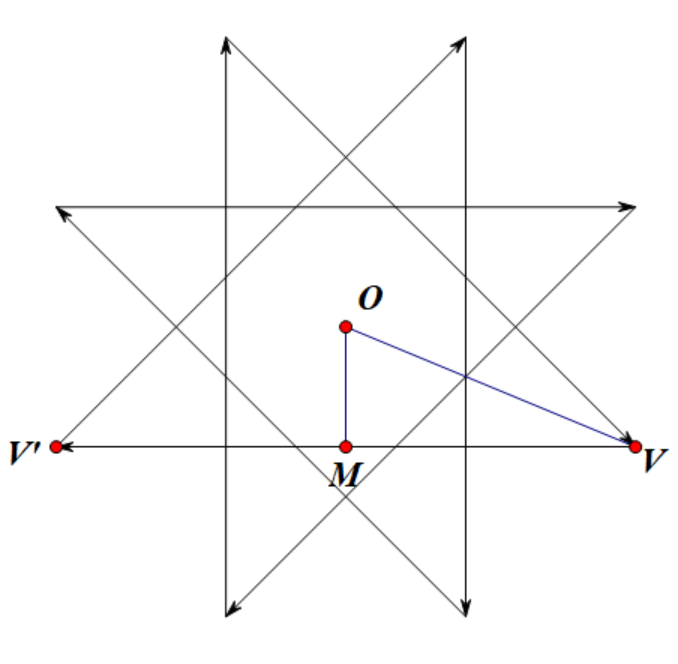

Project Euler 841
Project Euler 841
题目
Regular Star Polygons
The regular star polygon \(\{p/q\}\), for coprime integers \(p,q\) with \(p \gt 2q \gt 0\), is a polygon formed from \(p\) edges of equal length and equal internal angles, such that tracing the complete polygon wraps \(q\) times around the centre. For example, \(\{8/3\}\) is illustrated below:
The edges of a regular star polygon intersect one another, dividing the interior into several regions. Define the alternating shading of a regular star polygon to be a selection of such regions to shade, such that every piece of every edge has a shaded region on one side and an unshaded region on the other, with the exterior of the polygon unshaded. For example, the above image shows the alternating shading (in green) of \(\{8/3\}\).
Let \(A(p, q)\) be the area of the alternating shading of \(\{p/q\}\), assuming that its inradius is \(1\). (The inradius of a regular polygon, star or otherwise, is the distance from its centre to the midpoint of any of its edges.) For example, in the diagram above, it can be shown that central shaded octagon has area \(8(\sqrt{2}-1)\) and each point’s shaded kite has area \(2(\sqrt{2}-1)\), giving \(A(8,3) = 24(\sqrt{2}-1) \approx 9.9411254970\).
You are also given that \(A(130021, 50008)\approx 10.9210371479\), rounded to \(10\) digits after the decimal point.
Find \(\sum_{n=3}^{34} A(F_{n+1},F_{n-1})\), where \(F_j\) is the Fibonacci sequence with \(F_1=F_2=1\) (so \(A(F_{5+1},F_{5-1}) = A(8,3)\)). Give your answer rounded to \(10\) digits after the decimal point.
解决方案
令\(\theta=\dfrac{\pi}{p}.\)对于任意正则（星形）多边形，只要内切圆半径固定为 \(1\)，所有边都与该圆相切；从中心 \(O\) 向任意一条边作垂线，垂足落在该边中点，且距离为 \(1\)。
对星形多边形 \({p/k}\)（此处 \(1\le k < p/2\)），考虑其某条边的两端顶点 \(V\) 与 \(V'\)。它们在圆心的张角为 \(2k\cdot\dfrac{2\pi}{p}\) 的一半落在边中垂方向上，因此“边中点方向”与“顶点方向”的夹角为 \(k\theta\)。设该边中点为 \(M\)，则三角形 \(OMV\) 为直角三角形，且\(OM=1, \angle MOV = k\theta, OV = \dfrac{OM}{\cos(k\theta)}=\sec(k\theta).\)因此：
结论 1： 当 \(\{p/k\}\) 的 inradius 为 \(1\) 时，它的每个顶点到中心的距离为\(d(k)=\sec(k\theta)=\dfrac{1}{\cos(k\pi/p)}.\)
对固定的 \(\{p/q\}\)（且 \(p>2q\)），其内部由交点形成若干“同心层”的正则星形轮廓；这些轮廓可用一串 \(\{p/1\},\{p/2\},\dots,\{p/q\}\) 来描述（它们具有相同的边方向体系，只是“层级”不同）。交错着色的含义等价于：从外部（不着色）往内跨过一段边，着色状态翻转一次，因此沿半径方向层与层之间严格交错。

下面给出一个对计算极其友好的分解。记 \(S_k\) 为内切半径归一化为 \(1\) 时星形多边形 \(\{p/k\}\) 的面积。 观察 \(\{p/k\}\) 与 \(\{p/(k-1)\}\) 的顶点方向相互交错；绕中心一圈可以把对应区域切成 \(2p\) 个全等三角形。每个三角形的三个顶点分别为：\(O\)（中心）；一个来自 \(\{p/(k-1)\}\) 的顶点（距中心 \(d(k-1)\)）；相邻方向上的一个来自 \(\{p/k\}\) 的顶点（距中心 \(d(k)\)）。这两个顶点对应的射线夹角恒为 \(\theta\)，因此单个小三角形面积为\(\dfrac{1}{2}d(k-1)d(k)\sin\theta.\)这样的三角形共有 \(2p\) 个，于是得到：
结论 2： 层级面积的大小为
\[ S_k=2p\cdot\frac12d(k-1)d(k)\sin\theta=p\sec((k-1)\theta)\sec(k\theta)\sin\theta. \]
利用正切差公式\(\tan a-\tan b=\dfrac{\sin(a-b)}{\cos a\cos b},\)取 \(a=k\theta,b=(k-1)\theta\)，有\(\tan(k\theta)-\tan((k-1)\theta)=\dfrac{\sin\theta}{\cos(k\theta)\cos((k-1)\theta)}=\sec((k-1)\theta)\sec(k\theta)\sin\theta.\)因此还可写成更简洁的形式：
结论 3：\(\displaystyle{S_k=p(\tan(k\theta)-\tan((k-1)\theta)).}\)特别地，\(S_1=p\tan\theta\)，这正是 inradius 为 \(1\) 的正 \(p\) 边形面积。
外部不着色，跨过每一段边翻转一次，因此各层（由 \({p/k}\) 给出的轮廓）之间的“带状区域”交错着色。等价地，交错着色面积是层级面积的交错和（整体符号取绝对值保证为正）：
\[ A(p,q)=\left|\sum_{k=1}^{q}(-1)^kS_k\right| =\left|\sum_{k=1}^{q}(-1)^kp\sec((k-1)\theta)\sec(k\theta)\sin\theta\right|. \]
把 \(S_k=p(\tan(k\theta)-\tan((k-1)\theta))\) 代入并整理，会得到一个常见的交错正切和：
\[ A(p,q) = p\left(\tan(q\theta)+2\sum_{k=1}^{q-1}(-1)^{k+q}\tan(k\theta)\right). \]
这个式子在理论上很漂亮，但问题在于对这个式子但直接数值求和会出现严重的灾难性抵消，即两个非常接近的大数相减，结果是个小数，但有效数字大量丢失，导致相对误差被放大很多。
为了解决这个问题，我们把交错和按相邻两项合并成差分。定义\(K_t = S_{t+2}-S_{t+1} (t\ge -1),\)并约定 \(S_0=0\)。则当 \(t=-1\) 时\(K_{-1}=S_1-S_0=S_1=p\tan\theta,\)它对应中心那一块（当 \(q\) 为奇数时会被纳入着色）。对 \(t\ge 0\)，用结论 2：
\[ K_t = p\sin\theta(\sec((t+1)\theta)\sec((t+2)\theta)-\sec(t\theta)\sec((t+1)\theta)) = p\sin\theta\sec((t+1)\theta)(\sec((t+2)\theta)-\sec(t\theta)). \]
几何上，\(K_t\) 正是相邻两层之间一条“带状区域”在一个对称扇区内对应的风筝面积（绕中心复制 \(p\) 次得到整层）。交错着色恰好选取从最外层开始隔一层取一层，因此最终得到稳定求和公式：
\[ A(p,q)=\sum_{t=q-2,q-4,\dots} K_t, \] 也就是 \(t\) 从 \(q-2\) 开始每次减 \(2\)，直到 \(-1\)（当 \(q\) 奇）或 \(0\)（当 \(q\) 偶）。由于对 \(p>2q\) 有 \(\cos(k\theta)>0\)，所以每个 \(K_t>0\)，整个求和几乎没有抵消，数值极稳定。
把 \(K_t\) 展开后可写成实现友好的形式。令 \(t\) 与 \(q\) 同奇偶，则
\[ A(p,q) = p\sin\theta \sum_{t\equiv q\pmod 2,0\le t\le q-2} \frac{\sec((t+2)\theta)-\sec(t\theta)}{\cos((t+1)\theta)} +\mathbf{1}\{q\equiv 1\pmod2\}\cdot p\tan\theta. \]
代码
1 | import numpy as np |